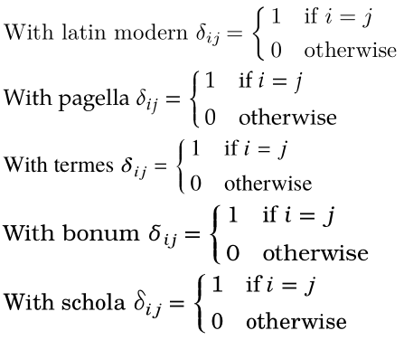
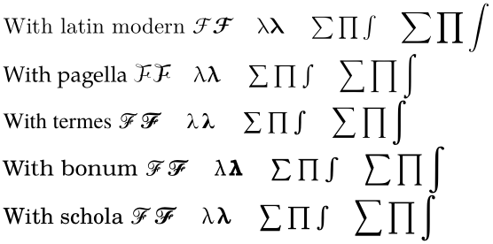
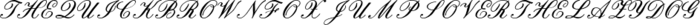

Contents
Using Math fonts in MkIV
ConTeXt ships with typescript for the following math fonts. To use these typescripts, either use
\setupbodyfont[<name>]
To combine these math fonts with other text fonts, create your own typescript
\definetypeface[<typescript-name>][mm][<name>][default] .... \setupbodyfont[<typescript-name>]
| Font Name | Typescript Name | Extra information |
|---|---|---|
| Latin Modern | modern | |
| Termes (Times clone) | times | Use \enablemode[txmath] to use txmath fonts (better don’t)
|
| Pagella (Palatino clone) | palatino | Use \enablemode[pxmath] to use pxmath fonts (better don’t)
|
| Bonum (Bookman clone) | bonum | |
| Schola (Century Schoolbook clone) | schola | |
| Iwona | iwona | sans |
| Antykwa Torunska | antykwa-torunska | |
| Lucida (Opentype fonts) | lucidaot | Add \loadtypescriptfile[lucida-opentype] before the font directives
|
| Lucida (Type One fonts) | lucida | Add \loadtypescriptfile[lucida-typeone] before the font directives. (Better don’t use.)
|
| XITS (Opentype version of STIX) | xits | |
| XITS (BiDi support) | xitsbidi | |
| Asana (Palatino clone) | asana | |
| Palatino Informal | informal | sans |
| Mathdesign Charter | charter | Add \loadtypescriptfile[mathdesign] before the font directives
|
| Mathdesign Garamond | garamond | Add \loadtypescriptfile[mathdesign] before the font directives
|
| Mathdesign Utopia | utopia | Add \loadtypescriptfile[mathdesign] before the font directives
|
| HV Math | hvmath | |
| Math times | mathtimes | |
| Cambria | cambria | |
| Euler (Fallback on Palatino) | pagellaovereuler | Add \appendtoks \rm \to \everymathematics
|
Example
-
\startbuffer[demo] \mathematics{% \delta_{ij} = \startmathcases \NC 1 \NC \text{if } i = j \NR \NC 0 \NC \text{otherwise} \NR \stopmathcases}\par \stopbuffer \framed[frame=off,align=normal]{% <==== just for this wiki typesetting {\setupbodyfont[latinmodern,12pt]With latin modern \getbuffer[demo]} % default {\setupbodyfont[pagella,12pt] With pagella \getbuffer[demo]} % or palatino {\setupbodyfont[termes,12pt] With termes \getbuffer[demo]} % or times {\setupbodyfont[bonum,12pt] With bonum \getbuffer[demo]} % or bookman {\setupbodyfont[schola,12pt] With schola \getbuffer[demo]} % or schoolbook }
- 
Bold math with \mathbf
-
\startbuffer[demo] \mathematics{% \cal{F} \mathbf{\cal{F}} \quad \cal{\lambda} \mathbf{\cal{\lambda}} \quad \sum\prod\int \quad \displaystyle\sum\prod\int}\par \stopbuffer \framed[frame=off,align=normal]{% <==== just for this wiki typesetting {\setupbodyfont[latinmodern,12pt]With latin modern \getbuffer[demo]} % default {\setupbodyfont[pagella,12pt] With pagella \getbuffer[demo]} % or palatino {\setupbodyfont[termes,12pt] With termes \getbuffer[demo]} % or times {\setupbodyfont[bonum,12pt] With bonum \getbuffer[demo]} % or bookman {\setupbodyfont[schola,12pt] With schola \getbuffer[demo]} % or schoolbook }
- 
For probably now old content, see Bold Math.
Old Article
This article is about various mathematical fonts that can be used in ConTeXt; it doubles as a list of math fonts. Tweaks are collected here; longer pieces of code are given their own article.
Latin Modern
Latin Modern is an OTF remake of the Computer Modern fonts, and the default ConteXt font. The OpenType Latin Modern Math is ConTeXt Mark IV 's default math font. While the OTF Latin Modern Math was under development, ConTeXt used the Type1 version, hacked to look like OTF to the engine, and with some tweaks on top. If you still want the old behaviour, you can put
\enablemode[lmmath]
at the top of your document.
TeX Gyre
The GUST foundry, the creator of the TeX Gyre - Old Content fonts, has created OTF math fonts to go with Pagella (Palatino), Termes (Times), Bonum (Bookman) and Schola (New Century Schoolbook). Using these fonts for math is automatically enabled when you set the appropriate bodyfont.
\setupbodyfont[palatino] % or pagella % or \setupbodyfont[times] % or termes % or \setupbodyfont[bookman] % or bonum % or \setupbodyfont[schoolbook] % or schola
There exist also virtual versions of these fonts. The virtual counterparts are adaptations of the old TFM/Type1 fonts so they look like OpenType math fonts to the engine. ConTeXt MkIV used them for a while so that it could move entirely to Unicode/OpenType math while waiting for the real OpenType fonts, and quite some tweaks went into making them look good.
If you want to keep the old behaviour, type
\enablemode[txmath,pxmath]
at the top of your document. This does not set the math font directly; rather it specifies that if Pagella or Termes is used for maths, ConTeXt should use the virtual font instead of the non-virtual one. (This made sense in 2012, but not any more since 2014.)
Blackboard bold
Blackboard bold is built into Latin Modern and ConTeXt. Use it like so:
\blackboard{Z}
See Blackboard bold for further details.
Euler
Euler is a math font created by Hermann Zapf. It combines well with Palatino, inter alia; see Palatino with Euler for Math - Old Content. See also the Euler in ConTeXt My Way by Adam Lindsay.
Doublestroke
The doublestroke fonts are an alternative to the msbm Blackboard bold font. To use them with ConTeXt, see Doublestroke.
Ralph Smith's formal script

Ralph Smith's Formal Script is a script alphabet that blends well with Latin Modern. Typescript instructions are on the Rsfs page.
{kind=link}